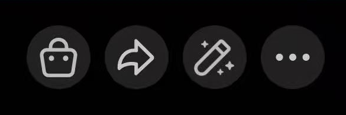
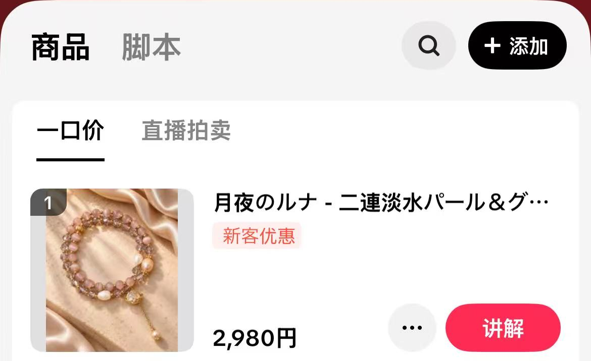

日区 TikTok Shop 直播
开播前必看
每场开播前先做速查，再按图操作。直播时可随时回来查展示动作和互动话术。
开播前 30 秒速查
- 镜头和麦克风已测试。商品清晰，展示的手腕和商品都在画面里。
- 实物已按顺序放好。款式、价格和购物袋商品卡已核对。
- 首款提词稿已打开。主播与中控确认以日语口播。
开播实操
开播与下播步骤
按顺序操作，需要时展开对应截图。
打开直播入口
打开 TikTok，点页面底部中间的「＋」。
切换到直播
在拍摄页面底部选择「直播」，进入开播准备页。
添加直播商品
在开播准备页打开「商品」面板，点「＋ 添加商品」。
选择立即购买
在添加商品方式中选择「立即购买」。
打开直播商品集
点商品列表顶部的「直播商品集」，找到本场要用的商品组合。
勾选商品组合
在「直播商品组合」页面勾选本场对应组合，核对后点底部「全部添加」。
完成添加
返回「添加商品」列表，检查已添加的商品，点右下角「完成」。
核对直播商品
回到商品面板，确认本场商品已正常显示，款式和价格正确，再点「完成」。
开始直播
确认镜头、灯光、麦克风、商品及提词稿准备就绪，再点「开启直播」。
结束直播
收尾后点直播页面右上角的结束按钮，并按应用提示确认。
直播中操作
讲哪款，就挂哪款商品链接
准备介绍某款商品时，在 TikTok 直播界面操作，让观众看到并能点开对应商品卡。
-
点直播画面底部的购物袋
打开直播商品列表。截图最左侧就是购物袋图标。

-
核对商品，点右侧红色「讲解」
对照手里的实物与列表里的商品图和名称。找到正在讲的款后，点那一行的「讲解」。确认直播中显示的商品卡与实物一致再继续讲。换款时点新款的「讲解」。

商品卡出现后，可以这样引导观众
TikTok Shop 官方商品置顶说明
気になる方は、画面の商品カードをタップして、詳しく見てみてください。
感兴趣的话，可以点一下画面上的商品卡查看详情。
直播中
直播中六条提醒
- 注意对焦
把商品移到展示位置后停一下，确认珠子、吊饰或纹路清楚，再开始讲解。
- 手腕和商品都要入镜
戴在手腕上或握在手里展示时，看一眼预览。转动商品时也要保持在画面内。
- 有人进来可以打招呼
いらっしゃいませ。来てくださってありがとうございます。
- 有人关注，可以说声感谢
フォローありがとうございます。
- 有人送礼物，要说感谢
ギフトありがとうございます。
- 展示完把商品挂回展架
挂回原位，再拿下一款。下次找货时就能按顺序取用。
直播中随手查
拿着实物找提词稿
- 打开「看图找款」，拿实物对照颜色、珠形、吊饰和搭配。
- 也可以搜索颜色、款式编号或 SKU。相似款先核对 SKU，再点对应照片打开提词。
- 讲完点稿件顶部或底部的「返回图片检索」，回到该商品的图片位置，继续找下一款。